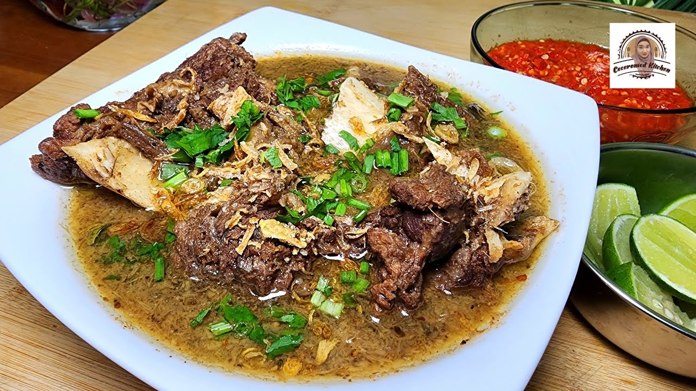
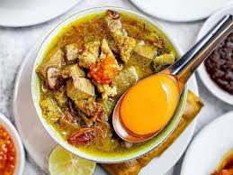
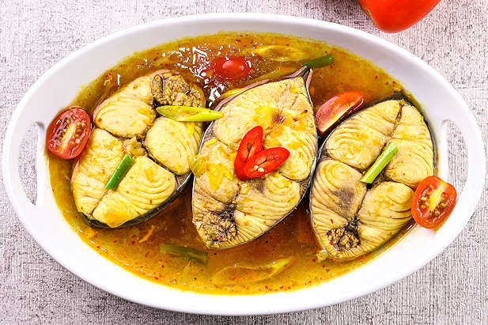
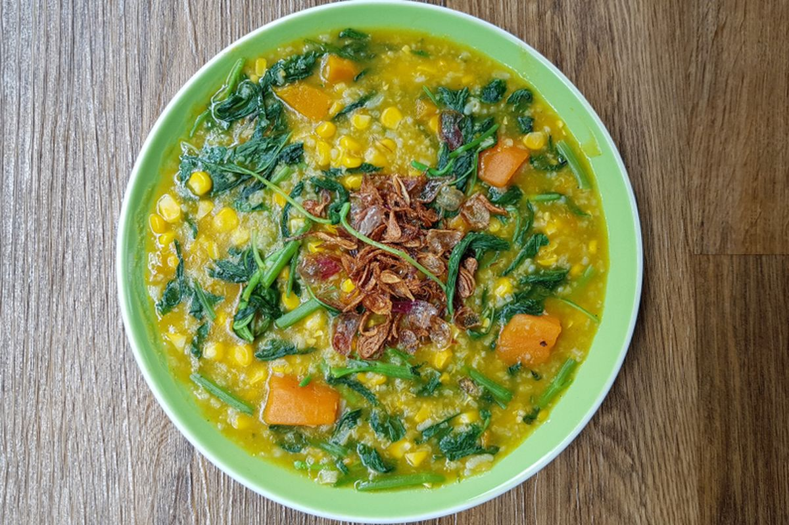
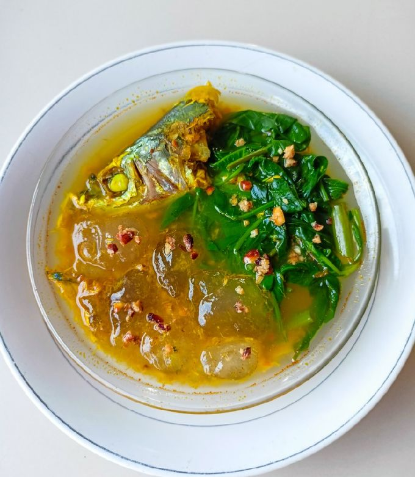

Coto Makassar
Sup daging khas Makassar dengan bumbu kacang dan rempah kuat.

Konro
Iga sapi yang dimasak dengan bumbu hitam kluwek, khas Makassar.

Pallubasa
Masakan daging berkuah dengan kelapa sangrai, gurih dan kaya rasa.

Ikan Woku
Ikan berbumbu pedas rempah khas Manado, dimasak daun woka.

Tinutuan (Bubur Manado)
Bubur sayur sehat khas Manado dengan labu dan kangkung.

Kapurung
Makanan khas Luwu berbahan sagu dengan campuran sayur dan ikan.